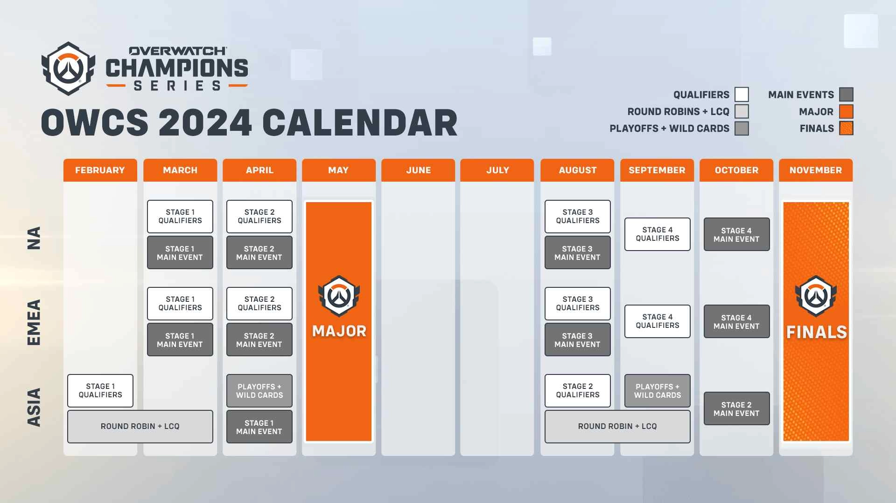
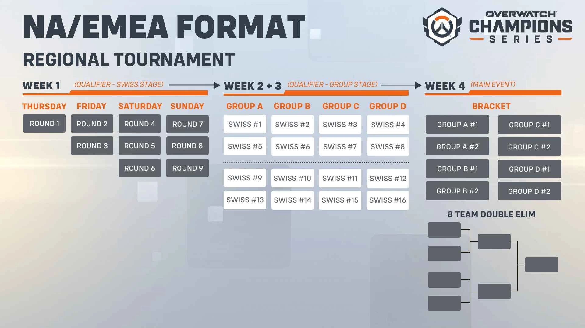

Schedule
In North America, the season will be split into 4 stages, with each having an open qualifier and main event. Through strong placements in stages, teams can compete in in-person events, such as the Major in the middle of the season and the Finals at the end. Competition for the first stage begins March 1, 2024.
Individual stages will take place across 4 weeks. Week 1 has 9 rounds of Swiss Competition. In Week 2 & 3, the top 16 teams are sorted into 4 Groups based on seeding, where the top 2 teams in each group advance. Finally, the top 8 teams battle it out in a double elimination bracket, with points and prizing given based on performance.